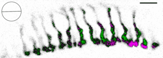
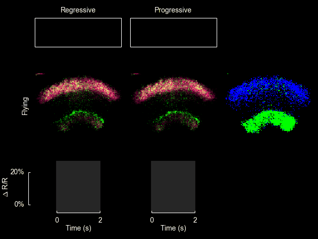
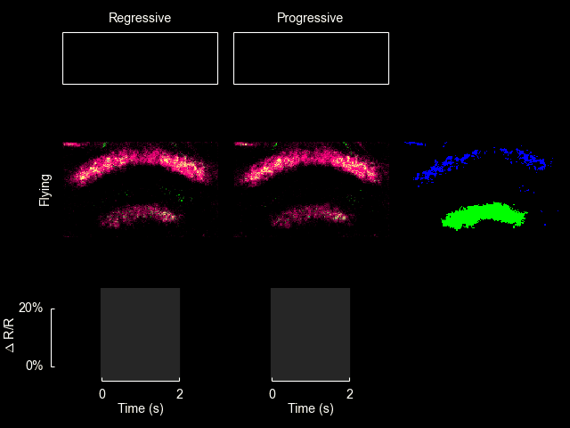

{kind=link}
Jump to Publications | Central Complex | HS cells | Fan-shaped body | Polarization behavior | Vision
Other web locations
peterthomasweir.blogspot.com (an informal blog of handy tech tidbits)
http://ptweir.github.io/ (some code repositories and hardware projects)
stackoverflow.com/users/2665843
Research
I am interested in how nervous systems generate complex behavior. The fruit fly, Drosophila melanogaster, is able to survive and thrive in a variety of environmental conditions with a limited number of neurons. This adaptability suggests that the nervous system of the fly efficiently and robustly extracts relevant information from sensory systems and uses that information to drive behavioral responses. The depth of knowledge that over a century of work on the genetics of Drosophila has discovered provides us with an enviable toolkit with which to pursue neuroscientific questions. Arguably no other organism allows one to examine different levels of nervous system function with such ease.
Vision is extraordinarily useful for guiding locomotion. This process is interesting at various levels. What particular cues do animals use to orient? How does the relevance of these cues change with behavioral state? How does the nervous system compute relevant cues at appropriate times? I rely on quantitative behavioral techniques to study visual control of navigation by fruit flies. Drosophila, like other insects, has the ability to detect the natural pattern of polarization present in sky light. I am interested in how they use this information to hold a heading during long duration flights, and how that heading is chosen and preserved. Recent advances have also enabled the use of genetically encoded calcium indicators to monitor neuronal activity of small sets of cells during flight behavior. I currently use this approach combined with electrophysiology and simple modeling to research flight-dependent responses to visual stimuli in the central brain of flies. It is my hope that studying visual navigation using parallel techniques will lead to a deeper understanding of this sensory-motor behavior.
Photoreceptor responses to linearly polarized light
Many insects use the polarization of sky light to navigate. Together with Miriam Henze, I just completed a study of the specialized photoreceptors that mediate this sensory modality.
Read more
{kind=link}
In addition, we published online supplementary information describing how to build the stages that I use to record from the brains of Drosophila during flight behavior.
For additional information see Weir et al. (2016) J Neurosci.
Central complex responses during flight
I recently published a paper on visual processing in a highly conserved region of the insect brain, the central complex. We observed visually elicited responses to a wide panel of stimuli in all sub-regions of the central complex. Interestingly, in one sub-region known as the fan-shaped body, responses to the visual stimuli were only visible when the animal was flying. This work was featured in a blog post from the National Institutes of Health.
Read more
{kind=link}

{kind=link}
For additional information see Weir & Dickinson (2015) Proc Natl Acad Sci USA.
HS cell responses during flight
I collaborated on a paper just out in PNAS on the responses of Horizontal System (HS) cells during flight. A major observation of the paper is that the flight control system appears to include a component that responds to the integral of the recent history of visual input, in addition to the direct response to the instantaneously measured visual slip velocity. The utility of such a system can be explained by control theoretic considerations. I imaged calcium activity in HS cell terminals with Bettina Schnell, and we observed that the time course of this activity also reflects temporal integration, suggesting that calcium accumulation may produce the observed behavior. Below is a video I made that demonstrates both the behavior and the calcium activity.
Read moreCalcium activity in HS cell terminals during flight (from our Vimeo channel).
A fly displays a prolonged turning response during and after the presentation of a wide-field drifting grating stimulus, indicating the presence of an integration step in the flight control system. Simultaneously aquired GCaMP6f responses in visual interneurons follow a similar time course. Maximal z projection of an anatomical stack of the same fly is shown for reference. This video plays back at 1/4 actual speed. For additional information see Schnell et al. (2014) Proc Natl Acad Sci USA.
ExFl1 neurons in the fan-shaped body
With Bettina Schnell and Michael Dickinson I have recently completed a study of one type of extrinsic fan-shaped body neurons. Some videos and figures that didn’t make it into the final manuscript are below.
Read more{kind=link}
Position of ExFl1 neuron in relation to central complex neuropils. Based on a Biocytin fill of a single cell.
The ExFl1 neurons (alternatively called F1 neurons) arborize in the ventral-most layer of the fan-shaped body.
{kind=link}
We imaged calcium activity in this region using 2-photon excitation of GCaMP3 and GCaMP5. Simultaneously, we presented patterns of visual motion to the fly and monitored its flight behavior.
{kind=link}
Schematic of apparatus used in imaging experiments.
Heuristic model of progressive motion sensitivity
{kind=link}
Predictions of progressive motion sensitivity. a, Mean data from the flight trials in Figure 3 of the paper are reproduced here in blue for comparison. Green lines show the result of convolving our hypothesized response kernel with the bilateral progressive speed of the stimulus, depicted in b. Inset in red shows the form of the response kernel on the same time axis but in arbitrary vertical units. The prediction of progressive motion sensitivity reasonably matches the fluorescence data, with the largest departures consistently occurring after the stimulus disappeared. b, Hypothesized driving signal: The progressive component of the instantaneous angular speed of the pattern on either side (left, L, and right, R). Vertical units are arbitrary because the model must be shifted and scaled to be comparable to fluorescence data. c, Same as Figure 3d of the paper.
After conducting the experiments shown in Figure 3 of the paper, we constructed a simple model to quantify the observation that the cellular responses appeared correlated with periods of progressive motion. Without an explicit model it is difficult to evaluate how strong these correlations are. The input to the model was the speed of progressive motion exhibited by the stimulus on each side (panel b). The dynamics of the observable cellular responses are determined by a range of factors, including transmission delays from upstream circuits, time for temporal comparison inherent in the computation of motion, and the temporal resolution of GCaMP3 in response to changes in intracellular calcium. The simplest model of these collective dynamics is a unimodal response kernel with characteristic rise and decay times. We chose a kernel constructed as the difference between two decaying exponentials, with time constants of 300 ms and 800 ms, respectively: with t > 0 being the time in seconds (panel a, inset). (These time constants are somewhat arbitrary, but the general form of the predicted response remains recognizable if they are varied across a factor of two.) We convolved this kernel with the stimulus input from both left and right visual fields, added the results, then vertically shifted and scaled the output to be comparable with the observed values of ΔF/F. The input and output of this model are shown here along with the observed cellular responses. The agreement between the observed data (blue) and the model (green) supports the hypothesis that these cells are responsive to the bilateral sum of progressive optic flow. Further, this model provides a quantitative prediction for the responses to novel visual stimuli, which we can compare to experimental results.
credit: Peter Weir
Calcium imaging in the central complex during flight. ExFl1 neurons expressing GCaMP5 show increased fluorescence in response to front-to-back motion of vertical bars while the animal is flying, but no changes to the same stimuli while the animal is quiescent. Download the original video file by clicking here.
credit: Peter Weir
Calcium imaging in the central complex during flight. ExFl1 neurons expressing GCaMP3 show increased fluorescence in response to front-to-back motion of vertical bars while the animal is flying, but no changes to the same stimuli while the animal is quiescent. Download the original video file by clicking here.
credit: Peter Weir
Anatomy of a single ExFl1 neuron. Created using the ImageJ neurite tracer on a confocal stack of a single Biocytin-filled cell. Download the original video file by clicking here.
References
Hanesch U, Fischbach KF, Heisenberg M. Neuronal architecture of the central complex in Drosophila melanogaster. Cell Tissue Res 257: 343–366, 1989.
Polarization-based navigation
For my dissertation I studied the orientation of Drosophila to the polarization pattern present in natural sky light. Roger Hardie wrote a Dispatch about my paper in Current Biology.
Read more
credit: Current Biology 2012, Peter Weir and Michael Dickinson
Movie S2. Movie of individual fly (switching arena experiment with diffuser and polarizer). Recorded at 130 fps and plays back at 10x actual speed. To download original movie file right-click here.
{kind=link}
A fly glued to a pin that is held vertically between two magnets. Click to enlarge.
{kind=link}
A fly in front of the sky at sunset. Click to enlarge.
Other musings on vision
I’m interested in visual systems in general. Below are some additional bits and pieces of thoughts.
Read more{kind=link}
The surface of the earth as seen from the center of the earth by a fly and a human unable to move their eyes.
One often hears about the low resolution of fly eyes, and how the organization of compound eyes limit the visual acuity of insects. While these limits are indisputable, I thought it would be informative to construct the following figure to show a fair comparison between the eyes of flies and the eyes of humans. On the top is a equirectangular image of the earth (image from here) as seen from the hypothetical vantage point inside the earth. Note the well-known distortion (especially at the poles) that results from this type of projection. Nevertheless, it is a reasonably useful picture. One can imagine standing at the center of a glass globe with the continents and oceans painted on the surface, facing the point where the prime meridian intersects the equator and looking outward. (Because we are inside the globe, the image is flipped horizontally). The top picture is a representation of what the surface would look like if one were free to move one’s eyes and head. The angular difference between points represented by adjacent pixels in the picture is larger than that resolvable by human eyes, so the resolution does not need to be diminished.
{kind=link}
The second image is a representation of the image a fly would see from the same vantage point if it were unable to move its head. Note that the level of detail resolvable by the fly is severely limited. The entire island of Madagascar is only viewed by a few ommatidia. (To create this image I used data from Erich Buchner, digitized by Andrew Straw.) The fly does have a remarkably large field of view, however. Without turning its head (or moving its eyes, which are fixed rigidly to the head) it can see almost the entire visual surround, including both poles, only excluding a thin slice (represented by the narrowing of the image in the central Pacific).
The view of a human in the same situation is depicted in the bottom panel. The resolution is quite high, and individual features are clearly distinguishable in the entire image. The field of view, however, is significantly smaller than that of the fly. Without moving one’s eyes or head, North America, Europe, Australia, the Pacific, both poles, and most of Asia would be completely invisible.
Several questions arise immediately: How does the fly cope with it extremely pixelated world view? Is there a reason flies need to view a more complete panorama? There are also a number of important differences that these images do not capture. The fly and human differ in their perception of color, the rapidity with which they respond to changes in the visual scene, and the mechanisms by which they adapt to changing light levels. Flies even have the ability to detect the angle of polarization of linearly polarized light (see above).
References
Buchner, E. (1971) Dunkelanregung des stationaeren Flugs der Fruchtfliege Drosophila. Dipl Thesis, Univ Tuebingen.
Heisenberg, M. and Wolf, R., (1984) Vision in Drosophila: Genetics Microbehavior (Studies of Brain Function). Springer Verlag.
Publications
Weir PT*, Henze M*, Bleul C, Baumann-Klausener F, Labhart T, Dickinson MH (2016) Anatomical reconstruction and functional imaging reveal an ordered array of skylight polarization detectors in Drosophila. J Neurosci 36(19): 5397-5404. (*Equal contributions) [PubMed]
Weir PT & Dickinson MH (2015) Functional divisions for visual processing in the central brain of flying Drosophila. Proc Natl Acad Sci USA 112(40):E5523-5532. [PubMed]
Schnell B, Weir PT, Roth E, Fairhall AL, Dickinson MH (2014) Cellular mechanisms for integral feedback in visually guided behavior. Proc Natl Acad Sci USA 111(15):5700-5705. [PubMed]
Weir PT, Schnell B, Dickinson MH (2014) Central complex neurons exhibit behaviorally gated responses to visual motion in Drosophila. J Neurophysiol 111:(1) 62-71. [PubMed]
Weir PT & Suver MP (2013) From dendritic compartments to neuronal networks: a multilevel analysis of motion vision. J Neurosci 33(24):9876-9878. [PubMed]
Weir PT & Dickinson MH (2012) Flying Drosophila orient to sky polarization. Curr Biol 22(1) 21-27. [PubMed]
Education
Ph.D. Computation and Neural Systems, Caltech, 2013
B.A. Physics and Mathematics, UC Berkeley, 2004